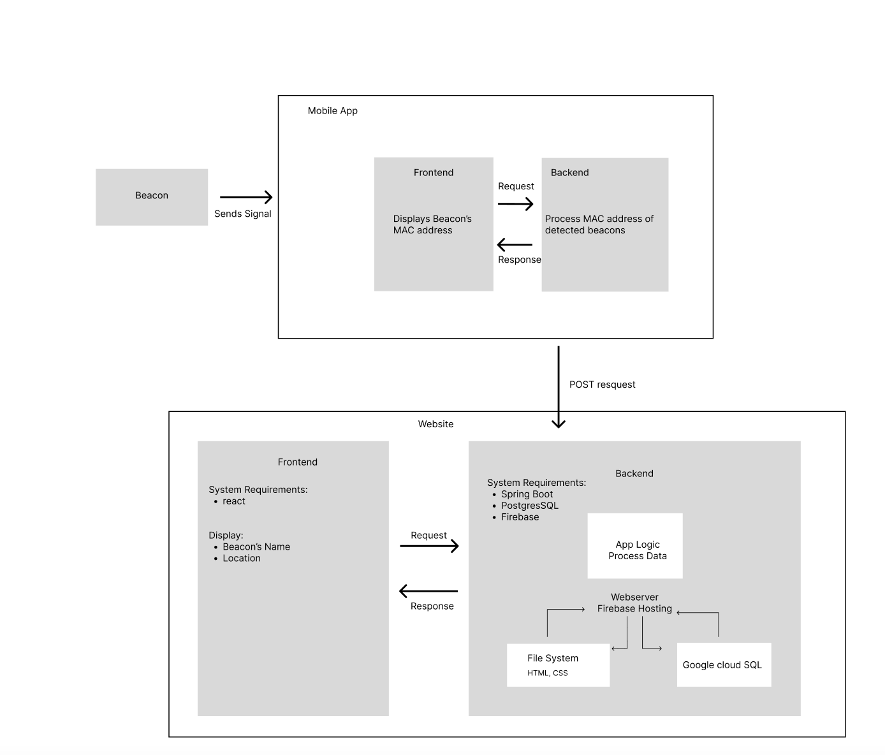

System Architecture
 Our project consists of a mobile application and a website. Porters will have a mobile phone with them and our application allows beacons to send their signal and the app will display available MAC addresses for nearby beacons. We then process these MAC addresses and send a POST request to our Spring Boot backend web server. Then the porter’s live location will be seen on our website based on the nearest beacon. Our system will then allow the medical dispatcher to send a request for delivery based on the nearest porter to the pick-up location.